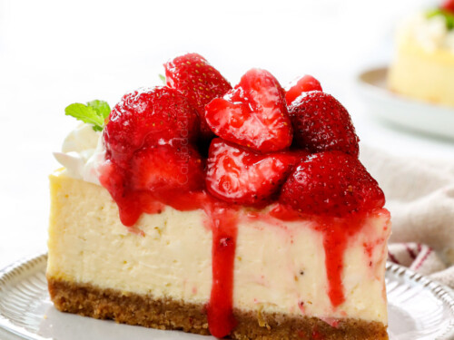

Strawberry Cheesecake

Most Sensational Cheesecake
This recipe is ideal for every spring and summer gathering because it’s make-ahead friendly and will have everyone swooning. Serve it up at holidays like Easter, Mother’s Day, Father’s Day and 4th of July, events like baby showers, bridal showers and birthday parties, and every pool party, potluck and barbecue in between. Add a big dollop of fresh cream and heaven awaits!
Ingredients
- Graham Crackers
- Butter
- Sugar
- Cream cheese
- Sour cream/li>
- Eggs
- Lemon zest
- Vinilla extract
- Strawberries
- Jell-O
- Cornstarch
- Lemon juice
- Heavy cream
- Powered sugar
Steps
- Make the Graham Cracker Crust Base
Combine cream cracker crumbs, sugar, and melted butter. Press the crumb mixture in the bottom and up the sides of a 9-inch springform pan. Preheat the oven to 350°F and bake for 10 minutes. Set aside to cool.
- Beat the cream cheese with an electric mixer until smooth and creamy. Beat in the sugar, sour cream, salt, and vanilla extract until well combined. Gently stir in lightly beaten eggs.
Pour the filling over the prepared crust and set it inside a water bath. A water bath is just a pan of water placed in the oven in which you put the cake pan during baking. It ensures the cheesecake bakes at an even temperature and keeps the top of the cheesecake from cracking.
Bake in a 300°F oven for 1 hour then turn the oven off and let the cheesecake sit in the oven for another hour with the door closed.
Remove the cheesecake from the oven and set it on a wire rack to cool completely then refrigerate for 4 at least 4 hours or overnight..
- Make the Strawberry Topping
Puree fresh strawberries with cornstarch using a blender or a food processor. Add the puree and sugar to a medium saucepan and cook over medium heat until thickened. This may take anywhere between 10 to 20 minutes.
Once thickened, stir in the chopped strawberries and set aside to cool. Top the cheesecake with the strawberry sauce just before serving. You can cover the entire cheesecake with the strawberry topping or you can drizzle it over each piece if you are serving pieces individually.